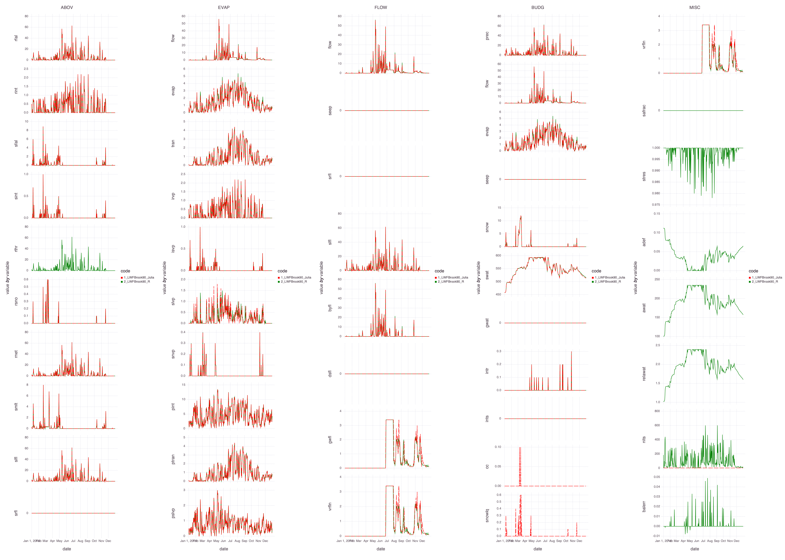
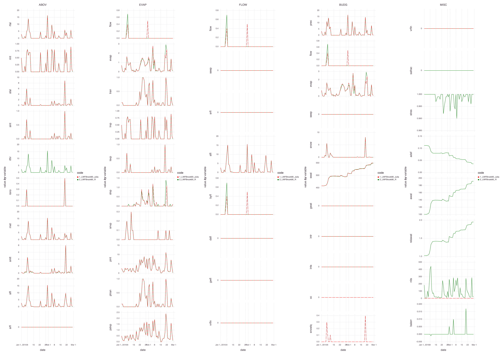

Validation
Comparison with LWFBrook90R
Tests are run to assert agreement with results from LWFBrook90R. Visualizations are reported below. Note that minor discrepancies are still present linked to the adaptive time stepping and intermediate updates of state variables.

Figure 4: Comparing daily outputs of LWFBrook90R and LWFBrook90.jl for example data set over a year

Figure 5: Comparing daily outputs of LWFBrook90R and LWFBrook90.jl for example data set over 2 months
Note that some features of LWFBrook90R are not implemented in the main version of LWFBrook90.jl. The time step adaptivity and Reset==1 are major ones that require some code refactoring in order to use them together with the library for ODEs DiffEq.jl. Because of that implementation of these features is currently unsupported.